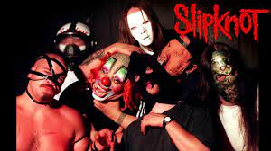

A Melhor Banda de Death Metal de Todos os Tempos
Slipknot: Onde Tudo Começou?
Slipknot é uma banda norte-americana de metal formada em Des Moines, Iowa, em 1995. A banda fez a sua primeira performance ao vivo sob o nome "Meld", em 4 de dezembro de 1995 em um clube chamado, The CroBar, em Des Moines. Logo depois, Jordison sugeriu a banda a mudar o nome para Slipknot, devido à música de mesmo nome da demo, Mate. Feed. O "núcleo" da banda formou-se em 1991, quando o baterista Shawn Crahan, o vocalista Anders Colsefini, baixista Paul Gray e o guitarrista Patrick Neuwirth formaram a banda PAINFACE. Pat, como era chamado o guitarrista, também ajudou Shawn na sua primeira banda (heads on the wall) que também tinha como guitarrista Quan Nong.
Em Setembro de 1995, a banda "The Pale Ones" foi criada com Shawn Crahan na bateria, Gray no baixo, Anders Colsefini nos vocais e o guitarrista Steele. Joey Jordison se aderiu a banda pouco depois, tendo o papel de baterista e, posteriormente, transferido Crahan para a percussão. A banda continuou a desenvolver a sua visão mais do que seria na banda, tomaram a decisão de acrescentar um segundo guitarrista, entra em ação Josh Brainard e Colsefini mudando para a percussão junto com vocais. A banda também começou a experimentar sua imagem, vestindo roupas grotescas, eventualmente, a anti-imagem foi conceito desenvolvido para os membros usando máscaras e macacão industrial. Até este ponto, a banda tinha permanecido essencialmente obscurecido devido à sua vontade de esperar até que a sua música foi totalmente desenvolvida.
Com muitos materiais já prontos, a banda começou a gravar em um estúdio local, SR Áudio com Sean McMahon. Em Fevereiro de 1996, o guitarrista Donnie Steele deixou a banda devido a suas crenças cristãs, embora os outros membros da banda estavam dispostos a permitir que ele ficasse, Steele decidiu deixar. Seu substituto, Craig Jones, chegou durante a mistura das fases deste novo projecto. Em 4 de abril, Slipknot tocou sua primeira execução pública no Des Moines reggae clube the Safari, onde tocou a maior parte dos seus primeiros shows. A banda começou a perceber mais uma vez que houve necessidade de uma mudança, uma vez que foram acrescentando amostras de suas gravações, mas que não poderia produzir esses sons ao vivo. Posteriormente, Craig Jones mudou-se para tocar sampler e Mick Thomson foi trazido para ocupar o espaço na guitarra. Após o conflito sobre a mixagem e masterização, a banda liberou seu primeiro álbum Mate. Feed. Kill. Repeat no Dia das Bruxas, 31 de Outubro de 1996. Com a produção deste álbum, Sean McMahon começou a distribuir registro e gestão das empresas, o que resultou em airplay na rádio local e, por sua vez, ganhou um lugar no Dotfest. Slipknot havia retornado para o estúdio para desenvolver novos materiais, o que exigiu um vocalista com voz melódica e violenta. Como resultado, Corey Taylor foi contratado a partir de colegas da banda Stone Sour; sendo que Colsefini mudou-se para o vocal de apoio e percussão. Com o seu novo vocalista, a banda continuou a fazer shows no Safari, durante um dos quais momentos, Colsefini no show surpreendeu a banda e os fãs tanto no palco anunciando que ele estava saindo da banda. A diferença na percussão foi preenchido por Greg Welts, que era carinhosamente conhecido como "Cuddles". No final de 1997, a banda foi atribuído números individuais para cada membro, respectivamente, e começou a usar uniforme macacão. No início de 1998, a banda criou um pequeno demo, que incluía "Spit It Out". O Slipknot Demo foi enviado para muitas gravadoras e, juntamente com uma crescente popularidade na Internet, o interesse cresceu a partir de gravadoras e eventualmente produtor Ross Robinson foi contatado. A banda, que tinha um forte interesse em trabalhar com Robinson, reuniu-se com ele e ele foi então decidido que iriam trabalhar em conjunto. Logo após, o DJ Sid Wilson foi levado para a banda impressionando seu talento como DJ surpreendendo a banda. Com a aquisição de Ross Robinson, os juros a banda cresceu e começou a chegar ofertas de gravadoras. Em 6 de julho de 1998 Welts foi convidado a deixar a banda se tornar o primeiro (e único) membro da banda a ser despedido, em última análise, a partir da banda. Chris Fehn substituiu Welts e em 8 de julho eles assinaram com a Roadrunner Records.
Seu estilo musical é o nu metal, que explodiu no fim dos anos 1990 nos Estados Unidos, a banda é conhecida por seu grande número de integrantes, pelas máscaras usadas por cada um, e pelos shows enérgicos, o que garantiu um número grande de fãs jovens até os dias atuais. Entre 1998 e 2010, a banda foi constituída por Sid Wilson, Chris Fehn, James Root, Craig Jones, Shawn Crahan, Mick Thomson, Corey Taylor, Paul Gray e Joey Jordison, responsáveis pela gravação de quatro álbuns de estúdio nesse período. Após a morte do baixista Paul Gray em 2010 e a saída do baterista Joey Jordison em 2013, Alessandro Venturella (baixo) e Jay Weinberg (bateria) foram escolhidos como substitutos. Em 2019, após um processo de Chris Fehn contra a banda, o percussionista a deixou, sendo substituído por Michael Pfaff.
A banda lançou seu primeiro disco demo, Mate. Feed. Kill. Repeat., em 1996. O seu álbum homônimo de estreia foi lançado em 1999, tendo sido sucedido por Iowa em 2001 e Vol. 3: (The Subliminal Verses) em 2004. Os discos seguintes, All Hope Is Gone (2008), .5: The Gray Chapter (2014) e We Are Not Your Kind (2019) atingiram o topo de várias paradas musicais pelo mundo, inclusive a norte-americana Billboard 200. A banda lançou também cinco DVDs, incluindo Disasterpieces (2002), que foi certificado com quádrupla platina nos Estados Unidos, e (sic)nesses (2010), no qual os integrantes da banda fizeram uma homenagem ao falecido baixista Paul Gray.
O Slipknot permanece como um dos grupos de maior sucesso dentro do seu estilo, liderando festivais de música como Ozzfest, Download Festival, Mayhem Festival, Rock am Ring, Hellfest e Graspop Metal Meeting. Até 2015, já haviam vendido cerca de 30 milhões de álbuns mundialmente. Em 2006, ganharam um Grammy na categoria Best Metal Performance pela canção "Before I Forget".
Recentemente eles lançaram a música The Chapeltown Rag.
CONFIRA O VÍDEO FEITO FOR UM FÃ NO KNOTFEST L.A. BANC OF CALIFORNIA
E aí? Sabia de todos esses detalhes sobre a história da banda? Espero que tenha curtido nosso post de hoje. Deixa nos comentários o que você achou.